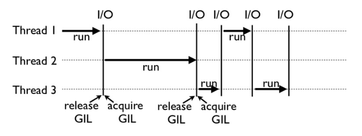
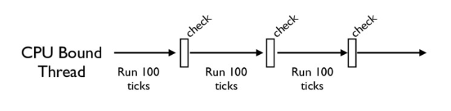

- 00 开篇词 从工程的角度深入理解Python.md
- 01 如何逐步突破，成为Python高手？.md
- 02 Jupyter Notebook为什么是现代Python的必学技术？.md
- 03 列表和元组，到底用哪一个？.md
- 04 字典、集合，你真的了解吗？.md
- 05 深入浅出字符串.md
- 06 Python “黑箱”：输入与输出.md
- 07 修炼基本功：条件与循环.md
- 08 异常处理：如何提高程序的稳定性？.md
- 09 不可或缺的自定义函数.md
- 10 简约不简单的匿名函数.md
- 11 面向对象（上）：从生活中的类比说起.md
- 12 面向对象（下）：如何实现一个搜索引擎？.md
- 13 搭建积木：Python 模块化.md
- 14 答疑（一）：列表和元组的内部实现是怎样的？.md
- 15 Python对象的比较、拷贝.md
- 16 值传递，引用传递or其他，Python里参数是如何传递的？.md
- 17 强大的装饰器.md
- 18 metaclass，是潘多拉魔盒还是阿拉丁神灯？.md
- 19 深入理解迭代器和生成器.md
- 20 揭秘 Python 协程.md
- 21 Python并发编程之Futures.md
- 22 并发编程之Asyncio.md
- 23 你真的懂Python GIL（全局解释器锁）吗？.md
- 24 带你解析 Python 垃圾回收机制.md
- 25 答疑（二）：GIL与多线程是什么关系呢？.md
- 26 活都来不及干了，还有空注意代码风格？！.md
- 27 学会合理分解代码，提高代码可读性.md
- 28 如何合理利用assert？.md
- 29 巧用上下文管理器和With语句精简代码.md
- 30 真的有必要写单元测试吗？.md
- 31 pdb & cProfile：调试和性能分析的法宝.md
- 32 答疑（三）：如何选择合适的异常处理方式？.md
- 33 带你初探量化世界.md
- 34 RESTful & Socket：搭建交易执行层核心.md
- 35 RESTful & Socket：行情数据对接和抓取.md
- 36 Pandas & Numpy：策略与回测系统.md
- 37 Kafka & ZMQ：自动化交易流水线.md
- 38 MySQL：日志和数据存储系统.md
- 39 Django：搭建监控平台.md
- 40 总结：Python中的数据结构与算法全景.md
- 41 硅谷一线互联网公司的工作体验.md
- 42 细数技术研发的注意事项.md
- 43 Q&A：聊一聊职业发展和选择.md
- 加餐 带你上手SWIG：一份清晰好用的SWIG编程实践指南.md
- 结束语 技术之外的几点成长建议.md
23 你真的懂Python GIL（全局解释器锁）吗？
你好，我是景霄。
前面几节课，我们学习了Python的并发编程特性，也了解了多线程编程。事实上，Python多线程另一个很重要的话题——GIL（Global Interpreter Lock，即全局解释器锁）却鲜有人知，甚至连很多Python“老司机”都觉得GIL就是一个谜。今天我就来为你解谜，带你一起来看GIL。
一个不解之谜
耳听为虚，眼见为实。我们不妨先来看一个例子，让你感受下GIL为什么会让人不明所以。
比如下面这段很简单的cpu-bound代码：
def CountDown(n):
while n > 0:
n -= 1
现在，假设一个很大的数字n = 100000000，我们先来试试单线程的情况下执行CountDown(n)。在我手上这台号称8核的MacBook上执行后，我发现它的耗时为5.4s。
这时，我们想要用多线程来加速，比如下面这几行操作：
from threading import Thread
n = 100000000
t1 = Thread(target=CountDown, args=[n // 2])
t2 = Thread(target=CountDown, args=[n // 2])
t1.start()
t2.start()
t1.join()
t2.join()
我又在同一台机器上跑了一下，结果发现，这不仅没有得到速度的提升，反而让运行变慢，总共花了9.6s。
我还是不死心，决定使用四个线程再试一次，结果发现运行时间还是9.8s，和2个线程的结果几乎一样。
这是怎么回事呢？难道是我买了假的MacBook吗？你可以先自己思考一下这个问题，也可以在自己电脑上测试一下。我当然也要自我反思一下，并且提出了下面两个猜想。
第一个怀疑：我的机器出问题了吗？
这不得不说也是一个合理的猜想。因此我又找了一个单核CPU的台式机，跑了一下上面的实验。这次我发现，在单核CPU电脑上，单线程运行需要11s时间，2个线程运行也是11s时间。虽然不像第一台机器那样，多线程反而比单线程更慢，但是这两次整体效果几乎一样呀！
看起来，这不像是电脑的问题，而是Python的线程失效了，没有起到并行计算的作用。
顺理成章，我又有了第二个怀疑：Python的线程是不是假的线程？
Python的线程，的的确确封装了底层的操作系统线程，在Linux系统里是Pthread（全称为POSIX Thread），而在Windows系统里是Windows Thread。另外，Python的线程，也完全受操作系统管理，比如协调何时执行、管理内存资源、管理中断等等。
所以，虽然Python的线程和C++的线程本质上是不同的抽象，但它们的底层并没有什么不同。
为什么有GIL？
看来我的两个猜想，都不能解释开头的这个未解之谜。那究竟谁才是“罪魁祸首”呢？事实上，正是我们今天的主角，也就是GIL，导致了Python线程的性能并不像我们期望的那样。
GIL，是最流行的Python解释器CPython中的一个技术术语。它的意思是全局解释器锁，本质上是类似操作系统的Mutex。每一个Python线程，在CPython解释器中执行时，都会先锁住自己的线程，阻止别的线程执行。
当然，CPython会做一些小把戏，轮流执行Python线程。这样一来，用户看到的就是“伪并行”——Python线程在交错执行，来模拟真正并行的线程。
那么，为什么CPython需要GIL呢？这其实和CPython的实现有关。下一节我们会讲Python的内存管理机制，今天先稍微提一下。
CPython使用引用计数来管理内存，所有Python脚本中创建的实例，都会有一个引用计数，来记录有多少个指针指向它。当引用计数只有0时，则会自动释放内存。
什么意思呢？我们来看下面这个例子：
>>> import sys
>>> a = []
>>> b = a
>>> sys.getrefcount(a)
3
这个例子中，a的引用计数是3，因为有a、b和作为参数传递的getrefcount这三个地方，都引用了一个空列表。
这样一来，如果有两个Python线程同时引用了a，就会造成引用计数的race condition，引用计数可能最终只增加1，这样就会造成内存被污染。因为第一个线程结束时，会把引用计数减少1，这时可能达到条件释放内存，当第二个线程再试图访问a时，就找不到有效的内存了。
所以说，CPython 引进 GIL 其实主要就是这么两个原因：
- 一是设计者为了规避类似于内存管理这样的复杂的竞争风险问题（race condition）；
- 二是因为CPython大量使用C语言库，但大部分C语言库都不是原生线程安全的（线程安全会降低性能和增加复杂度）。
GIL是如何工作的？
下面这张图，就是一个GIL在Python程序的工作示例。其中，Thread 1、2、3轮流执行，每一个线程在开始执行时，都会锁住GIL，以阻止别的线程执行；同样的，每一个线程执行完一段后，会释放GIL，以允许别的线程开始利用资源。

细心的你可能会发现一个问题：为什么Python线程会去主动释放GIL呢？毕竟，如果仅仅是要求Python线程在开始执行时锁住GIL，而永远不去释放GIL，那别的线程就都没有了运行的机会。
没错，CPython中还有另一个机制，叫做check_interval，意思是CPython解释器会去轮询检查线程GIL的锁住情况。每隔一段时间，Python解释器就会强制当前线程去释放GIL，这样别的线程才能有执行的机会。
不同版本的Python中，check interval的实现方式并不一样。早期的Python是100个ticks，大致对应了1000个bytecodes；而 Python 3以后，interval是15毫秒。当然，我们不必细究具体多久会强制释放GIL，这不应该成为我们程序设计的依赖条件，我们只需明白，CPython解释器会在一个“合理”的时间范围内释放GIL就可以了。

整体来说，每一个Python线程都是类似这样循环的封装，我们来看下面这段代码：
for (;;) {
if (--ticker < 0) {
ticker = check_interval;
/* Give another thread a chance */
PyThread_release_lock(interpreter_lock);
/* Other threads may run now */
PyThread_acquire_lock(interpreter_lock, 1);
}
bytecode = *next_instr++;
switch (bytecode) {
/* execute the next instruction ... */
}
}
从这段代码中，我们可以看到，每个Python线程都会先检查ticker计数。只有在ticker大于0的情况下，线程才会去执行自己的bytecode。
Python的线程安全
不过，有了GIL，并不意味着我们Python编程者就不用去考虑线程安全了。即使我们知道，GIL仅允许一个Python线程执行，但前面我也讲到了，Python还有check interval这样的抢占机制。我们来考虑这样一段代码：
import threading
n = 0
def foo():
global n
n += 1
threads = []
for i in range(100):
t = threading.Thread(target=foo)
threads.append(t)
for t in threads:
t.start()
for t in threads:
t.join()
print(n)
如果你执行的话，就会发现，尽管大部分时候它能够打印100，但有时侯也会打印99或者98。
这其实就是因为，n+=1这一句代码让线程并不安全。如果你去翻译foo这个函数的bytecode，就会发现，它实际上由下面四行bytecode组成：
>>> import dis
>>> dis.dis(foo)
LOAD_GLOBAL 0 (n)
LOAD_CONST 1 (1)
INPLACE_ADD
STORE_GLOBAL 0 (n)
而这四行bytecode中间都是有可能被打断的！
所以，千万别想着，有了GIL你的程序就可以高枕无忧了，我们仍然需要去注意线程安全。正如我开头所说，GIL的设计，主要是为了方便CPython解释器层面的编写者，而不是Python应用层面的程序员。作为Python的使用者，我们还是需要lock等工具，来确保线程安全。比如我下面的这个例子：
n = 0
lock = threading.Lock()
def foo():
global n
with lock:
n += 1
如何绕过GIL？
学到这里，估计有的Python使用者感觉自己像被废了武功一样，觉得降龙十八掌只剩下了一掌。其实大可不必，你并不需要太沮丧。Python的GIL，是通过CPython的解释器加的限制。如果你的代码并不需要CPython解释器来执行，就不再受GIL的限制。
事实上，很多高性能应用场景都已经有大量的C实现的Python库，例如NumPy的矩阵运算，就都是通过C来实现的，并不受GIL影响。
所以，大部分应用情况下，你并不需要过多考虑GIL。因为如果多线程计算成为性能瓶颈，往往已经有Python库来解决这个问题了。
换句话说，如果你的应用真的对性能有超级严格的要求，比如100us就对你的应用有很大影响，那我必须要说，Python可能不是你的最优选择。
当然，可以理解的是，我们难以避免的有时候就是想临时给自己松松绑，摆脱GIL，比如在深度学习应用里，大部分代码就都是Python的。在实际工作中，如果我们想实现一个自定义的微分算子，或者是一个特定硬件的加速器，那我们就不得不把这些关键性能（performance-critical）代码在C++中实现（不再受GIL所限），然后再提供Python的调用接口。
总的来说，你只需要重点记住，绕过GIL的大致思路有这么两种就够了：
- 绕过CPython，使用JPython（Java实现的Python解释器）等别的实现；
- 把关键性能代码，放到别的语言（一般是C++）中实现。
总结
今天这节课，我们先通过一个实际的例子，了解了GIL对于应用的影响；之后我们适度剖析了GIL的实现原理，你不必深究一些原理的细节，明白其主要机制和存在的隐患即可。
自然，我也为你提供了绕过GIL的两种思路。不过还是那句话，很多时候，我们并不需要过多纠结GIL的影响。
思考题
最后，我给你留下两道思考题。
第一问，在我们处理cpu-bound的任务（文中第一个例子）时，为什么有时候使用多线程会比单线程还要慢些？
第二问，你觉得GIL是一个好的设计吗？事实上，在Python 3之后，确实有很多关于GIL改进甚至是取消的讨论，你的看法是什么呢？你在平常工作中有被GIL困扰过的场景吗？
欢迎在留言区写下你的想法，也欢迎你把今天的内容分享给你的同事朋友，我们一起交流、一起进步。
© 2019 - 2023 Liangliang Lee. Powered by gin and hexo-theme-book.